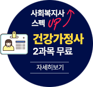
-
김영
사회복지학 - 사회복지학 선택이유
- 전공 개설 과목
- 자격증 정보
- 편입전문 학습설계
- 편입 상담 신청


편입 자격 요건 충족과
사회복지사 자격증 취득을 동시에!
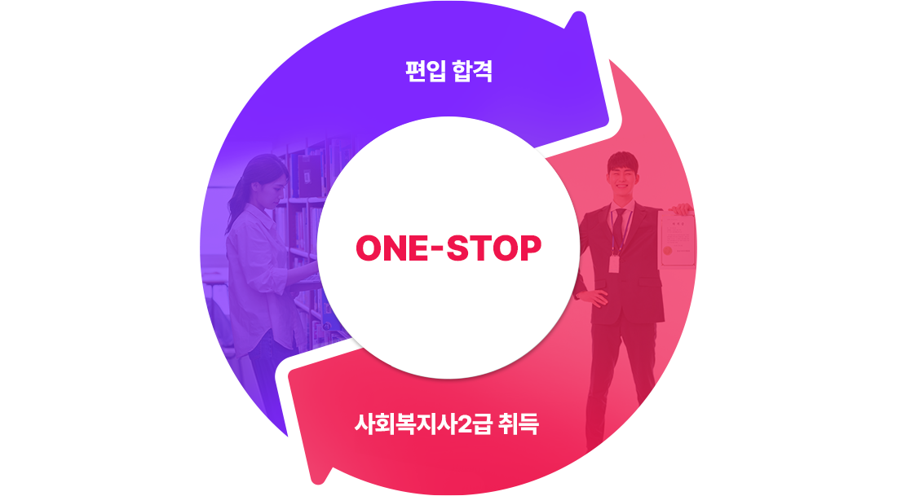
쉽고 빠른 편입 & 국가자격증 취득! 메가스터디그룹이 검증한 학위 및 자격증 취득 과정!
전공소개 사회복지 / 사회복지학
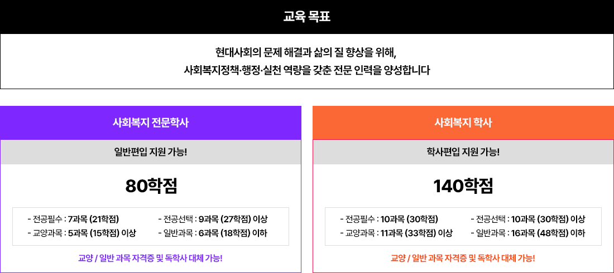
*전공필수 10과목 + 전공선택 7과목 총 17과목 이수 시 사회복지사 2급 자격증 신청 가능!
*[사회복지실천기술론], [인간행동과사회환경], [지역사회복지론]은 학사 전공 필수 / 전문학사 전공 선택 과목
전공 필수 10과목은 학사 기준
학점은행제 사회복지학 전공 선택 이유 3가지!
이유 01
비전공자도 쉽게, 단기간 학위취득!
1. 학위과정 전공 과목 개설
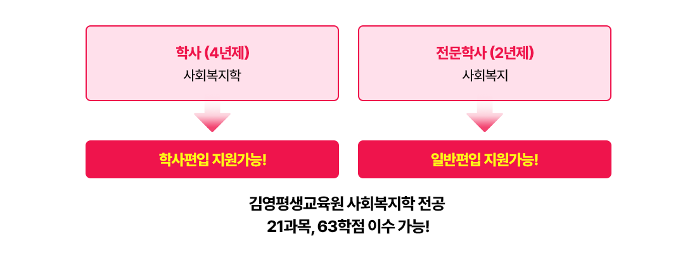
2. 학점인정 자격증 & 독학사 과정 운영
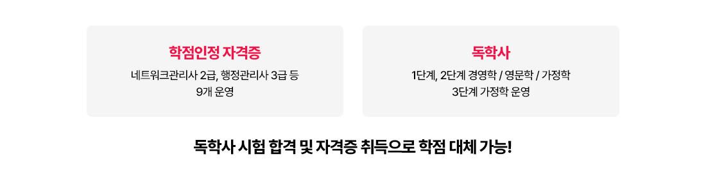
비전공자 수강생도, 전공 학점 없이!
김영평생교육원의 수업과 자격증&독학사로 사회복지학 학위 취득이 가능합니다
이유 02
합리적인 수강료 김영평생교육원 VS 전문대학 학위취득 비교
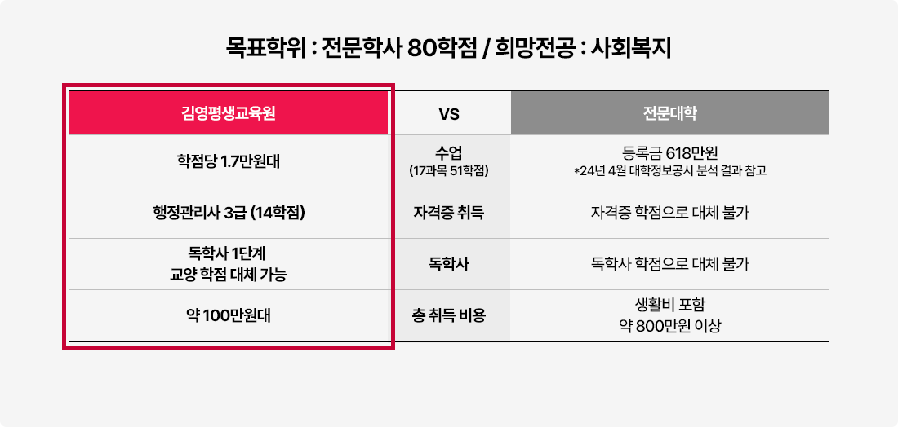
※ 취득 비용은 자격증, 독학사 인강/현강에 따라 소정의 차이가 발생할 수 있습니다.
※ 정확한 비용은 김영평생교육원의 무료학습설계를 통해 확인 가능합니다.
사회복지학 학위취득 비용 절감 장점!
# 전공에 필요한 이론수업 100% 온라인 개강
# 교양/일반 학점인정 자격증 과정 개설 운영
이유 03
취업/이직 스펙업
1. 경쟁력 있는 취업 준비
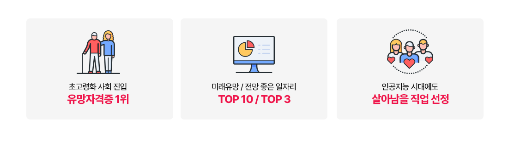
*고용노동부 2020~2030 중장기 인력수급 전망, 통계청 경제활동인구조사: 한고원 중장기 인력수급 전망
2. 다양한 진로 선택의 기회
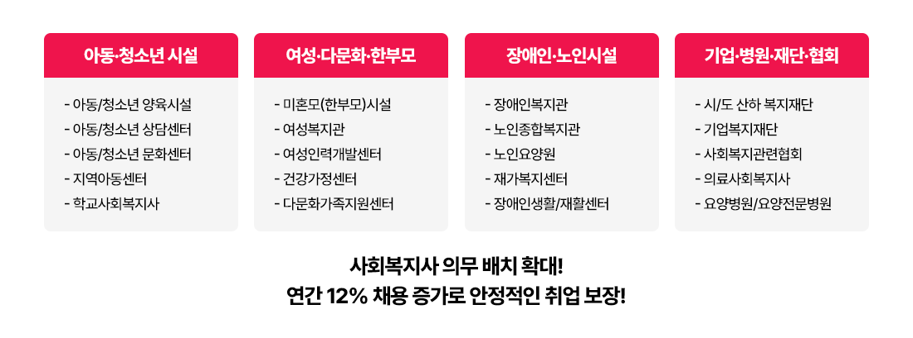
3. 안정적인 공무원 커리어
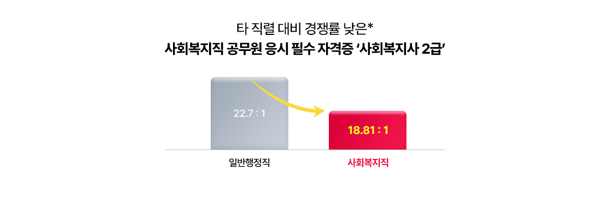
*24년 서울시 9급 공무원 필기시험 경쟁률 비교
김영평생교육원 사회복지 전문학사 / 학사 운영 개설 과목
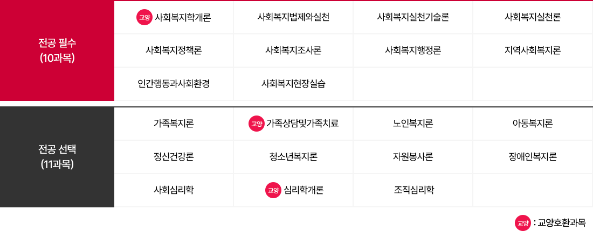
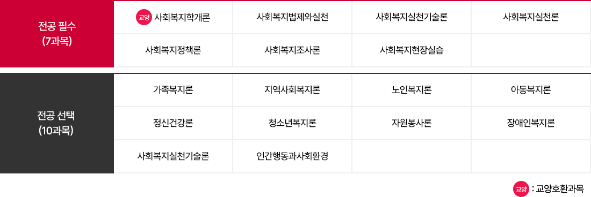
김영평생교육원, 사회복지학 전공 21과목 개설!
전문학사·학사 학위를 더 쉽고 빠르게 취득할 수 있습니다
학점인정자격증&독학사 합격률 UP 학점인정자격증&독학사 시험 한 번에 합격하기 위한 김영평생교육원의 다양한 강좌!
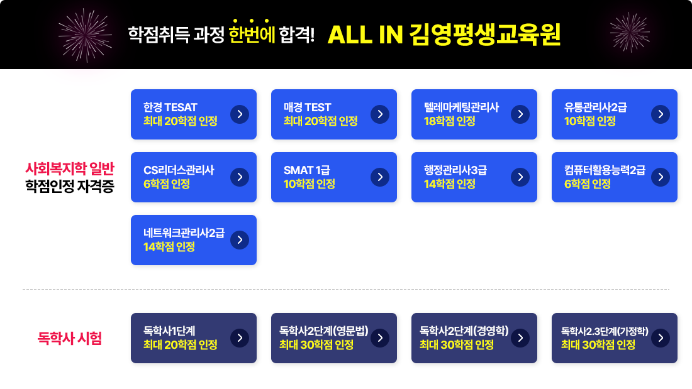
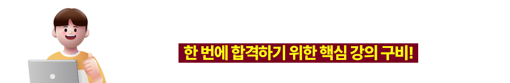
편입 성공의 조력자 학위 취득 방법! 막막하고 두려우신가요? 그렇다면, 나의 학위를 책임질 전문 컨설턴트를 만나보세요!
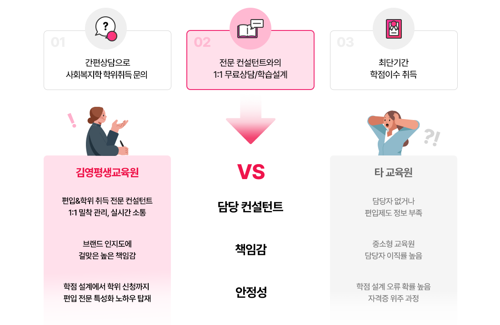
편입전문 학습설계
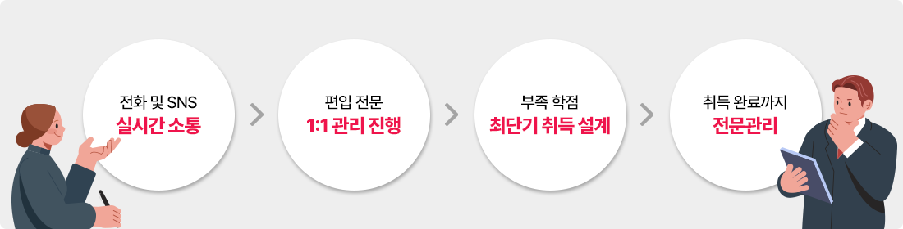
적은 시간 투자와 클릭 몇 번으로 1:1 맞춤형 학습설계부터 취득까지 안내 해드립니다!
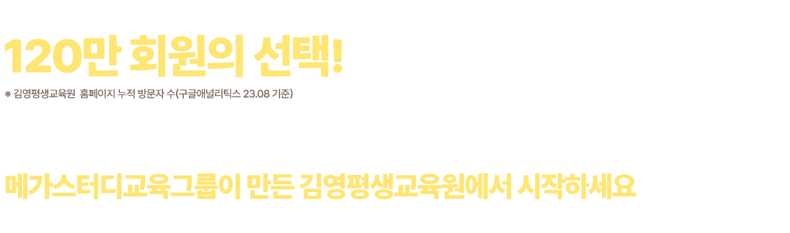